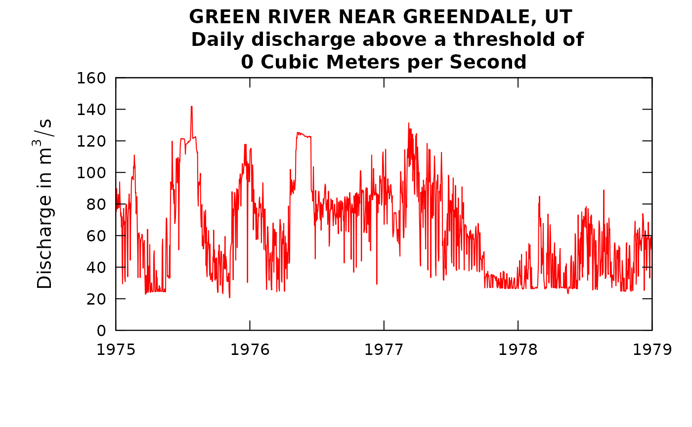
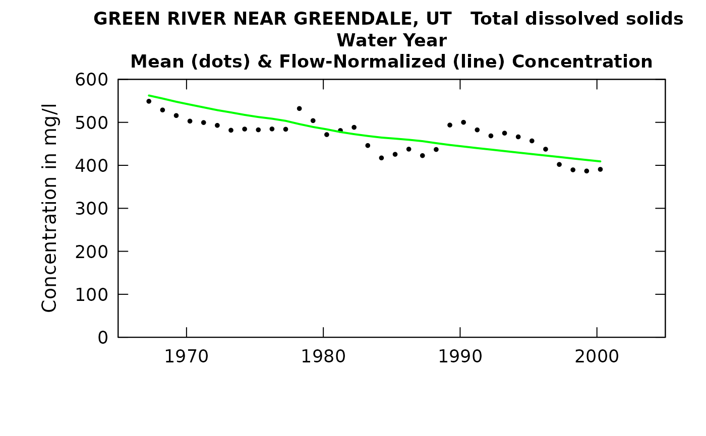
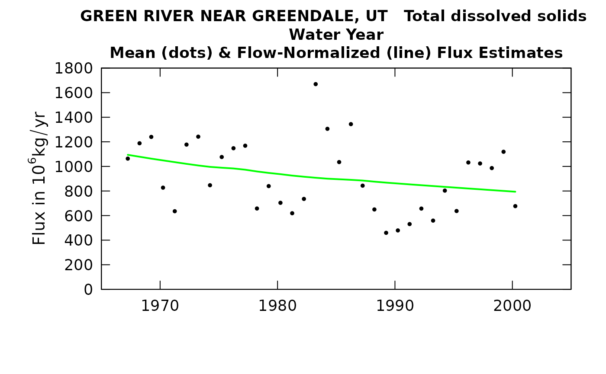
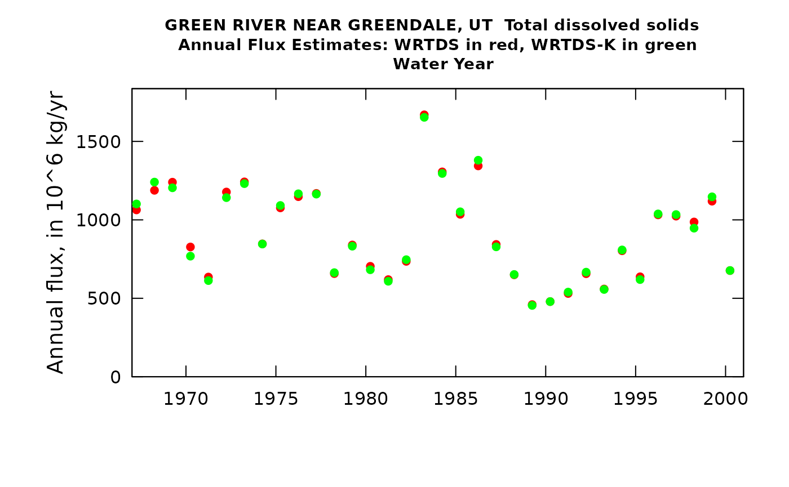
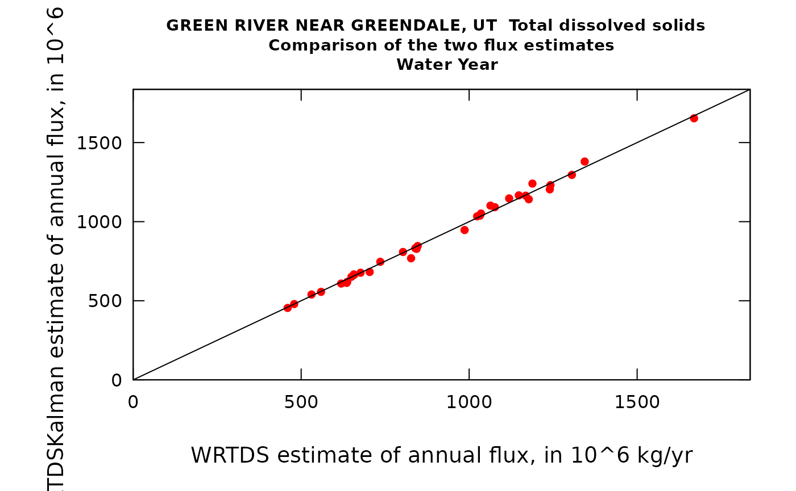

Using a WRTDS model where the discharge variable is not daily discharge
Robert M. Hirsch
2021-03-15
Source:vignettes/AlternativeQMethod.Rmd
AlternativeQMethod.RmdIntroduction
Sometimes the usual formulation of WRTDS is not ideal, because we believe that the daily discharge on the sampling day is not a very good explanatory variable, and we have an idea of a better variable we might use. Dams and reservoirs create situations where this may be an issue. A common example of this might be where the discharge at the sampling location is really just determined by the decision of a dam operator and not a real measure of the hydrologic conditions in the watershed and reservoir.
We will work with an example data set here for the Green River near Greendale, UT, and the variable of interest is total dissolved solids. This streamgage is immediately downstream of Flaming Gorge Reservoir. The period of water quality record we will work with covers water years 1966 through 2000. The daily discharge record at this site is very strongly controlled by release decisions made at the dam (for delivery to downstream water users and for hydropower) and is not closely related to hydrologic conditions in the watershed (which covers 19,400 square miles) and includes high mountain areas such as the Wind River Range as well as a lot of high desert in southwestern Wyoming. We will attempt to use the streamgage that is located just upstream of the reservoir, Green River near Green River Wyoming (the location that John Wesley Powell started his famous journey down through the Grand Canyon). This streamgage has a drainage area of 14,000 square miles, but much of the intervening drainage area between the two streamgages is quite arid, so the flows at the upper gage make up a large fraction of the water that comes out at the downstream end of the full watershed.
Our thinking is that the TDS values below the dam might be much better explained by a running mean of discharges at the upstream site, which would be more indicative of basin-wide hydrologic conditions. Because the reservoir stores so much water, we would expect that concentrations at the outflow would change very gradually given the very large mixing volume of the reservoir. In fact, the full-pool capacity of the reservoir is equal to about 2.5 years of streamflow.
So we will start by pulling in the data sets for the Greendale streamgage and running a standard WRTDS model for TDS, and also pull in the discharge data from the Green River streamgage that we will use later. In setting up the example we will also input two functions that are not in EGRET at this point. They are called “errorStats.R” and “estDailyFromSurfacesNEW.R”.
library(EGRET)
library(zoo) # zoo is a time series package, needed for rolling means
##################
sta <- "09234500"
param <- "70301"
startDate <- "1966-10-01"
endDate <- "2000-09-30"
INFO <- readNWISInfo(sta, param, interactive = FALSE)
Daily <- readNWISDaily(sta, "00060", startDate, endDate)## There are 12419 data points, and 12419 days.
Sample <- readNWISSample(sta, param, startDate, endDate)
eList <- mergeReport(INFO, Daily, Sample)##
## Discharge Record is 12419 days long, which is 34 years
## First day of the discharge record is 1966-10-01 and last day is 2000-09-30
## The water quality record has 324 samples
## The first sample is from 1966-10-04 and the last sample is from 2000-08-30
## Discharge: Minimum, mean and maximum 11.9 62.6 348
## Concentration: Minimum, mean and maximum 320 470 630
## Percentage of the sample values that are censored is 0 %
INFO <- eList$INFO # we will need this later
Sample <- eList$Sample # we will need this later
multiPlotDataOverview(eList, logScaleConc = FALSE)
# let's also see what a little slice of the discharge record looks like
plotQTimeDaily(eList, yearStart = 1975, yearEnd = 1979, qLower = 0, qUnit = 2, lwd = 1)
eListRegular <- modelEstimation(eList)##
## first step running estCrossVal may take about 1 minute
## estCrossVal % complete:
## 0 1 2 3 4 5 6 7 8 9 10
## 11 12 13 14 15 16 17 18 19 20
## 21 22 23 24 25 26 27 28 29 30
## 31 32 33 34 35 36 37 38 39 40
## 41 42 43 44 45 46 47 48 49 50
## 51 52 53 54 55 56 57 58 59 60
## 61 62 63 64 65 66 67 68 69 70
## 71 72 73 74 75 76 77 78 79 80
## 81 82 83 84 85 86 87 88 89 90
## 91 92 93 94 95 96 97 98 99
## Next step running estSurfaces with survival regression:
## Survival regression (% complete):
## 0 1 2 3 4 5 6 7 8 9 10
## 11 12 13 14 15 16 17 18 19 20
## 21 22 23 24 25 26 27 28 29 30
## 31 32 33 34 35 36 37 38 39 40
## 41 42 43 44 45 46 47 48 49 50
## 51 52 53 54 55 56 57 58 59 60
## 61 62 63 64 65 66 67 68 69 70
## 71 72 73 74 75 76 77 78 79 80
## 81 82 83 84 85 86 87 88 89 90
## 91 92 93 94 95 96 97 98 99
## Survival regression: Done
fluxBiasMulti(eListRegular)
# let's see how the model worked out going into and coming out of a severe drought year
plotConcTimeDaily(eListRegular, yearStart = 1977.0, yearEnd = 1979.0)What I think we are seeing in this final plot is that after the end of the 1977 drought, the WRTDS model expects concentrations to come back more to the normal range, but they actually end up being higher because during the drought the usual low-TDS inflow of the Spring and Summer of 1977 never really came and thus the contents of the reservoir went to a much higher concentration than one would expect for the time of year.
We can evaluate the accuracy of this WRTDS model for the whole period modeled here by computing an R-square value. This is computed as (Var(log(C)) - Var(errors of log(C))) / Var(log(C). We use the code “computeRsq.R” to do that.
errorStats(eListRegular)##
## Root Mean Squared Error in natural log units = 0.0738
## Rsquared for natural log of concentration = 0.583
## Rsquared for natural log of flux = 0.979
## Standard error of estimate = 7.39 %## RsqLogC RsqLogF rmse sepPercent
## 1 0.583 0.979 0.0738 7.39Notice that the Rsquared on log(Flux) is very high, nearly 98%. But, this is really a “dishonest” measure of the quality of the model, because so much of flux is determined by discharge. The really honest measure of the quality of the model is the Rsquared on log(Concentration) which is about 58%.
Bringing in the upstream discharge data and computing the rolling mean
Now, let’s bring in the data for the upstream site. We are only bringing in the discharge data, but we will start this record 5 years prior to the start of the Daily record we are using at the Greendale site. We do this because we want to do running averages and we might want to consider averages that run back a few years (since the reservoir stores multiple years worth of water).
staUp <- "09217000"
startUp <- "1961-10-01"
DailyUp <- readNWISDaily(staUp, "00060", startUp, endDate) ## There are 14245 data points, and 14245 days.
# we can take a look at the record here
plot(DailyUp$Date, DailyUp$Q, type = "l", ylim = c(0, 500), yaxs = "i", tck = 0.02)Now, what we want to do is try using a rolling mean of the inflows at the upstream site as an explanatory variable in place of the discharge at Greendale. But we need to explore a couple of things. One is how far back in time we want this rolling mean to start. Given that this is a very large reservoir for the size of the average flow I’d like to consider rolling means that go back a few years. We will start with the 1-year rolling mean, and then step through some longer and shorter ones later.
What we are going to do is this. We will take the Daily data frame from the Greendale (downstream) site and create a new column called Qa (meaning Q actual) which we will use later in the process to actually compute the fluxes. Then we will do the 1-year rolling mean for the upstream site (GreenRiver) and put that into the Daily data frame and call that Q, and then compute the natural log of Q and put that in the LogQ column. One other thing we need to think about is that we need to have the Green River data go back prior to the period we are estimating at Greendale, so we can do the rolling means, but then we have to clip it off so the dates in the Daily record at Green River exactly match the dates in the Daily record at Greendale. Here’s the code for all that.
Daily <- eListRegular$Daily
Daily$Qa <- Daily$Q
DailyUpTemp <- DailyUp
DailyUpTemp$Q <- rollmean(DailyUp$Q,365, fill = NA, align = "right")
# note that fill = NA means that if we are trying to compute the rolling mean and there
# aren't enough prior values to do it we just put in an NA
# align = "right" means that we associate the rolling mean with the "right most" (final) date
DailyUpTemp <- subset(DailyUpTemp, Date >= startDate)
# let's check that DailyUpTemp is exactaly as long as Daily
length(DailyUpTemp$Q)## [1] 12419
length(Daily$Q)## [1] 12419
Daily$Q <- DailyUpTemp$Q
Daily$LogQ <- log(Daily$Q)
# now we create a new eList that uses this rolling mean discharge
eListRoll <- mergeReport(INFO, Daily, Sample)##
## Discharge Record is 12419 days long, which is 34 years
## First day of the discharge record is 1966-10-01 and last day is 2000-09-30
## The water quality record has 324 samples
## The first sample is from 1966-10-04 and the last sample is from 2000-08-30
## Discharge: Minimum, mean and maximum 14.7 49.4 89.3
## Concentration: Minimum, mean and maximum 320 470 630
## Percentage of the sample values that are censored is 0 %
# here is the time series of the 1-year rolling mean, plotted on the same scale as before
plot(eListRoll$Daily$Date, eListRoll$Daily$Q, type = "l", ylim = c(0, 500), yaxs = "i", tck = 0.02)So, we see that we have a new discharge time series that is much less variable than the original. This raises an interesting point. We are about to estimate a WRTDS model with this new Q variable, but it doesn’t make sense to use the standard assumption about a good value for the windowQ variable. Normally, we find that windowQ = 2 works well for regular discharge data sets? But, is it reasonable to expect that this may be too large a value, because LogQ is so much less variable than the original Q variable. So, for a first crack at this problem I’m going to set windowQ equal to half the interquartile range of LogQ for this rolling mean discharge. (I did a little extra stuff to see if that assumption of using half the interquartile range is a good choice. My experience tells me that this is pretty good and the results are pretty insensitive to the choice.) So let’s do that and estimate the model and then evaluate the model using our computeRsq function.
iqr <- IQR(eListRoll$Daily$LogQ)
iqr## [1] 0.5009981
# for comparison let's look at the IQR for the original model we estimated
IQR(eList$Daily$LogQ)## [1] 0.8206605
# now let's estimate the new model using the rolling mean in place of the daily discharge
eListRoll <- modelEstimation(eListRoll, windowQ = 0.5 * iqr, verbose = FALSE)
# let's see how this new model does at estimating the concentration for that 1977-1978 period
# that we looked at before
plotConcTimeDaily(eListRoll, yearStart = 1977.0, yearEnd = 1979.0)
# recall that with the original model the Rsq value was 0.583
errorStats(eListRoll)##
## Root Mean Squared Error in natural log units = 0.0679
## Rsquared for natural log of concentration = 0.647
## Rsquared for natural log of flux = 0.961
## Standard error of estimate = 6.79 %## RsqLogC RsqLogF rmse sepPercent
## 1 0.647 0.961 0.0679 6.79We can see that we have boosted the Rsquared value from the original value of 0.583 up to a new value of 0.647. So we are getting somewhat better, but our selection of the 1-year rolling mean window was just a guess. Let’s try some other values. Let’s do one with half the width (half a year), and then one with twice the width (2 year) and see if either is better than the 1-year.
Here it is with half a year rolling mean
Daily <- eList$Daily
Daily$Qa <- Daily$Q
DailyUpTemp <- DailyUp
DailyUpTemp$Q <- rollmean(DailyUp$Q, 182, fill = NA, align = "right")
DailyUpTemp <- subset(DailyUpTemp, Date >= startDate)
# let's check that DailyUpTemp is exactaly as long as Daily
length(DailyUpTemp$Q)## [1] 12419
length(Daily$Q)## [1] 12419
Daily$Q <- DailyUpTemp$Q
Daily$LogQ <- log(Daily$Q)
# now we create a new eList that uses this rolling mean discharge
eListRoll <- mergeReport(INFO, Daily, Sample)##
## Discharge Record is 12419 days long, which is 34 years
## First day of the discharge record is 1966-10-01 and last day is 2000-09-30
## The water quality record has 324 samples
## The first sample is from 1966-10-04 and the last sample is from 2000-08-30
## Discharge: Minimum, mean and maximum 7.59 49.4 154
## Concentration: Minimum, mean and maximum 320 470 630
## Percentage of the sample values that are censored is 0 %
# here is the time series of the half-year rolling mean, plotted on the same scale as before
plot(eListRoll$Daily$Date, eListRoll$Daily$Q, type = "l", ylim = c(0, 500), yaxs = "i", tck = 0.02)
iqr <- IQR(eListRoll$Daily$LogQ)
iqr## [1] 0.8526911
# now let's estimate the new model using the rolling mean in place of the daily discharge
eListRoll <- modelEstimation(eListRoll, windowQ = 0.5 * iqr, verbose = FALSE)
# let's see how this new model does at estimating the concentration for that 1977-1978 period
# that we looked at before
plotConcTimeDaily(eListRoll, yearStart = 1977.0, yearEnd = 1979.0)
# recall that with the original model the Rsq value was 0.583
errorStats(eListRoll)##
## Root Mean Squared Error in natural log units = 0.0758
## Rsquared for natural log of concentration = 0.56
## Rsquared for natural log of flux = 0.981
## Standard error of estimate = 7.59 %## RsqLogC RsqLogF rmse sepPercent
## 1 0.56 0.981 0.0758 7.59And now with a 2 year rolling mean
Daily <- eList$Daily
Daily$Qa <- Daily$Q
DailyUpTemp <- DailyUp
DailyUpTemp$Q <- rollmean(DailyUp$Q, 730, fill = NA, align = "right")
DailyUpTemp <- subset(DailyUpTemp, Date >= startDate)
# let's check that DailyUpTemp is exactaly as long as Daily
length(DailyUpTemp$Q)## [1] 12419
length(Daily$Q)## [1] 12419
Daily$Q <- DailyUpTemp$Q
Daily$LogQ <- log(Daily$Q)
# now we create a new eList that uses this rolling mean discharge
eListRoll <- mergeReport(INFO, Daily, Sample)##
## Discharge Record is 12419 days long, which is 34 years
## First day of the discharge record is 1966-10-01 and last day is 2000-09-30
## The water quality record has 324 samples
## The first sample is from 1966-10-04 and the last sample is from 2000-08-30
## Discharge: Minimum, mean and maximum 21.1 49.7 82
## Concentration: Minimum, mean and maximum 320 470 630
## Percentage of the sample values that are censored is 0 %
# here is the time series of the 2-year rolling mean, plotted on the same scale as before
plot(eListRoll$Daily$Date, eListRoll$Daily$Q, type = "l", ylim = c(0, 500), yaxs = "i", tck = 0.02)
iqr <- IQR(eListRoll$Daily$LogQ)
iqr## [1] 0.4638389
# now let's estimate the new model using the rolling mean in place of the daily discharge
eListRoll <- modelEstimation(eListRoll, windowQ = 0.5 * iqr, verbose = FALSE)
# let's see how this new model does at estimating the concentration for that 1977-1978 period
# that we looked at before
plotConcTimeDaily(eListRoll, yearStart = 1977.0, yearEnd = 1979.0)
# recall that with the original model the Rsq value was 0.583
errorStats(eListRoll)##
## Root Mean Squared Error in natural log units = 0.0602
## Rsquared for natural log of concentration = 0.723
## Rsquared for natural log of flux = 0.939
## Standard error of estimate = 6.02 %## RsqLogC RsqLogF rmse sepPercent
## 1 0.723 0.939 0.0602 6.02So, we see that a half-year rolling mean didn’t do us any good. The model got worse. But the 2 year was an improvement. The Rsquared went up to 0.72. So, the question is now, what about a 3 year window. Might that work better? I’m not going to show the results here, but when I did it, the Rsquared went down slightly from the 2 year window (Rsquared 0.70). I’m going to declare that the best option is to use the 2-year rolling mean. (I don’t like the idea of using non-integers for the number of years in the rolling mean because then there will be seasonality to the discharge variable. It could work but it is not as simple to think about).
How do we use the selected model
Let’s review were we are. We have build a WRTDS model for TDS below Flaming Gorge Reservoir, but the discharge variable being used in the estimation is not the daily discharge at the sampling site, but is rather the two-year rolling mean discharge at the streamgage upstream of the reservoir. That means the explanatory variable is the 2-year mean discharge at the upstream site computed on the day the sample is collected below the reservoir. (We could have gotten a little more complex here and used a 2-year mean computed a few days before the sample was collected, to compensate for the travel time of the water to the dam, but I didn’t feel that it would make much difference. Perhaps if this was going to be a published study I would do that.) Note also that in the Daily data frame we have also stored the actual discharge for each day at the sampling site below the dam, we call that Qa. We need that, because when we go to compute an estimated flux from the estimated discharge we need the actual discharge at the sampling site and not the 2-year rolling mean.
We can view the concentration trend.
plotConcHist(eListRoll)
# but using plotFluxHist() would be meaningless, because the Q variable is the rolling mean and not the daily QNow, we need to fix up the flux results so they reflect the fact that the concentration values need to be multiplied by Qa even though the Q variable we used in the model was the rolling mean from the upstream site. Fortunately, thanks to Laura DeCicco, we have some code that does exactly that.
estDailyFromSurfaces_Qa <- function(eList, localsurfaces = NA, localDaily = NA) {
if(!is.egret(eList)){
stop("Please check eList argument")
}
localDaily <- getSurfaceEstimates(eList, localsurfaces=localsurfaces, localDaily = localDaily)
# Calculate "flow-normalized" concentration and flux:
allLogQsByDayOfYear <- bin_Qs(localDaily)
concFlux_list <- getConcFluxFromSurface(eList, allLogQsByDayOfYear, localDaily = localDaily, localsurfaces=localsurfaces)
localDaily$LogQ <- log(localDaily$Qa)
allLogQsByDayOfYear <- bin_Qs(localDaily)
allLogQsReplicated <- allLogQsByDayOfYear[localDaily$Day]
allFluxReplicated <- concFlux_list[["allConcReplicated"]] * exp(as.numeric(unlist(allLogQsReplicated))) * 86.4
# Finally bin the collective results by days (the decimal year), and calculate the desired means.
localDaily$FNConc <- as.numeric(tapply(concFlux_list[["allConcReplicated"]], concFlux_list[["allDatesReplicated"]], "mean"))
localDaily$FNFlux <- as.numeric(tapply(allFluxReplicated, concFlux_list[["allDatesReplicated"]], "mean"))
localDaily$FluxDay <- as.numeric(localDaily$ConcDay * localDaily$Qa * 86.4)
return(localDaily)
}
DailyNew <- estDailyFromSurfaces_Qa(eListRoll)
INFO <- eListRoll$INFO
Sample <- eListRoll$Sample
surfaces <- eListRoll$surfaces
eListNew <- as.egret(INFO, DailyNew, Sample, surfaces)
plotConcHist(eListNew)
plotFluxHist(eListNew)
We can look at the record in terms of the extent of the trend using tableChange, and also turn out tables of annual results. All of this works as usual.
tableChange(eListNew, yearPoints = c(1967, 1980, 2000))##
## GREEN RIVER NEAR GREENDALE, UT
## Total dissolved solids
## Water Year
##
## Concentration trends
## time span change slope change slope
## mg/L mg/L/yr % %/yr
##
## 1967 to 1980 -79 -6.1 -14 -1.1
## 1967 to 2000 -153 -4.6 -27 -0.83
## 1980 to 2000 -75 -3.7 -15 -0.77
##
##
## Flux Trends
## time span change slope change slope
## 10^6 kg/yr 10^6 kg/yr /yr % %/yr
## 1967 to 1980 -157 -12 -14 -1.1
## 1967 to 2000 -300 -9.1 -27 -0.83
## 1980 to 2000 -143 -7.1 -15 -0.76
tableResults(eListNew)##
## GREEN RIVER NEAR GREENDALE, UT
## Total dissolved solids
## Water Year
##
## Year Discharge Conc FN_Conc Flux FN_Flux
## cms mg/L 10^6 kg/yr
##
## 1967 56.5 549 562 1063 1094
## 1968 45.6 529 555 1188 1079
## 1969 49.0 516 548 1240 1063
## 1970 46.6 503 541 827 1049
## 1971 46.0 500 535 635 1035
## 1972 59.1 493 528 1177 1021
## 1973 71.1 482 523 1242 1008
## 1974 60.2 484 517 847 996
## 1975 52.6 483 512 1076 989
## 1976 55.7 485 508 1148 983
## 1977 51.7 484 503 1168 973
## 1978 37.4 532 496 658 959
## 1979 41.5 504 489 840 947
## 1980 47.6 471 484 704 937
## 1981 43.5 481 477 619 925
## 1982 41.4 488 473 735 916
## 1983 57.1 446 468 1669 908
## 1984 77.7 417 465 1306 900
## 1985 68.9 426 462 1035 895
## 1986 57.3 438 459 1344 891
## 1987 65.9 423 456 843 885
## 1988 56.7 437 452 650 876
## 1989 28.1 494 447 460 868
## 1990 24.0 500 444 479 861
## 1991 30.6 482 440 531 854
## 1992 34.5 469 437 657 847
## 1993 30.4 475 433 559 840
## 1994 32.3 466 430 803 834
## 1995 34.9 457 426 637 827
## 1996 42.5 438 423 1032 820
## 1997 57.6 402 419 1024 814
## 1998 63.1 390 416 986 807
## 1999 62.7 387 412 1119 801
## 2000 58.5 391 409 677 794There are two things of particular note here. One is that in table change it is interesting that the slopes in %/yr are virtually identical for concentration and for flux. That is just what we would expect because it is coming from a lorge body of water and is all in the dissolved phase. The other thing of note is that the discharge values on the tableResults output are not correct. They are the annual average of the rolling mean discharges at the upstream gage. As such, a major drought such as 1977 will not actually show up here until 1978. To get an accurate list one could go all the way back to the original eList for the site (without the upstream flow data) and do a tableResults (using the eListRegular) and the correct discharges would appear there.
WRTDS Kalman results
What if we wanted to come up with the best estimates of concentration or flux on each day (or month or year) in the record (as opposed to doing a trend evaluation)? We can also do a WRTDS_K estimate for these results. This should give us more accuracy. Note that we are only doing this to improve on the concentrations and fluxes. The flow normalized results in this output are not meaningful.
eListK <- WRTDSKalman(eListNew, rho = 0.95, niter = 50, verbose = FALSE)
# these next two lines of code are needed to get the proper discharge used in the flux estimates
GenFlux <- eListK$Daily$GenConc * eListK$Daily$Qa * 86.4
eListK$Daily$GenFlux <- GenFlux
plotWRTDSKalman(eListK)
plotTimeSlice(eListK, start = 1982, end = 1987, conc = TRUE)In this particular case, using the WRTDS_Kalman approach makes very little difference. That’s because the large mixing volume of the reservoir means that concentrations change very little over a period of a few days to a few weeks. I chose to set rho to a very high value to reflect that steadiness of concentration, but it makes very little difference. A little extra coding might be needed to do everything needed to look at the value of the WRTDS_Kalman approach for these types of situations.